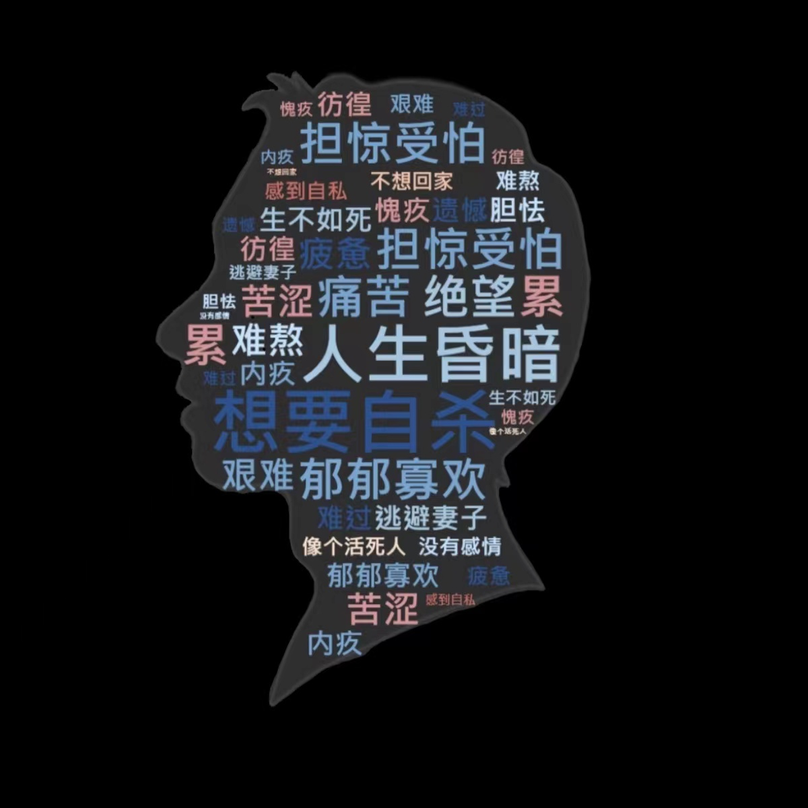

同妻：超过1600万人的婚姻悲剧
组员：安静静 李宸 陆子淳
像李洁这样的人，在中国被称为“同妻”。
当李洁找到青岛大学医学院教授张北川咨询时，张北川告诉她，可以基本确定她的丈夫就是同性恋。
在这段婚姻里，李洁总是觉得丈夫不太对劲。他很少在家里洗澡，但是身上不脏，手机定位有在宾馆的记录。
在李洁的直觉里，丈夫“不会和女人开房”。
后来，她发现丈夫似乎便血。二人的性生活并不和睦，丈夫从不脱上衣，更不会触碰她的上半身。整个过程像是在机械地完成任务。
当李洁找到青岛大学医学院教授张北川咨询时，张北川告诉她，可以基本确定她的丈夫就是同性恋。
在李洁之外，还有多少位女性经受着无望的婚姻呢？
同妻，指的是与男同性恋进入合法的婚姻关系，而本身是异性恋的女性。哈尔滨工业大学社会学系博士生导师唐魁玉认为，相比残疾人等身体上的弱势群体，同妻更是心理上的弱势群体，她们心里痛苦，不容易摆脱，困境特征明显。
一、中国“同妻”丈夫情况
作为在中国传统社会文化下，性别取向仍然难以被主流接受的同性恋群体，对于男同性恋而言，要在满足自己情感需求的情况下完成传统社会要求的家庭责任，是压抑而痛苦的。但事实上，在“同妻”婚姻中，他们既不是最无辜的，也不是遭受最多苦难的，而恰恰是最自私的。
调查研究显示，男同性恋在进入婚姻前大部分人都知道自己的性取向，仅有少部分人不知道自己的性取向，是婚后才慢慢得知。相反，女性在婚前大部分都不知道丈夫的性取向，只有寥寥无几的人是婚前就知晓，但以为婚后可以用“爱”来感化对方才选择的结婚。
同样，他们选择进入婚姻的目的也十分的自私。
一半以上的男性是因为父母的逼迫才不得不进入婚姻，19.2%的人企图通过婚姻来掩盖自己的性取向，以此来维护自己的工作和声誉，还有一小部分人是因为想要孩子才结婚，完全把女性当作“生育机器”。此外，有部分男性进入婚姻的原因，是男性伴侣规劝自己结婚，希望双方早日“稳定”下来，以免日后双方因结婚而结束感情。
男同性恋面对婚姻的心理情绪

进入婚姻的男同性恋往往想要远离妻子、逃避家庭，通常情绪低落，伴随着绝望、痛苦等一系列的消极情绪，很难在婚姻中获得幸福感。而在一段婚姻里，夫妻二人有着长时间的相处时间，他们的情绪也难免影响到妻子，这也是同妻这一群体所经受的痛苦的基石。
进入婚姻的男同性恋往往想要远离妻子、逃避家庭，通常情绪低落，伴随着绝望、痛苦等一系列的消极情绪，很难在婚姻中获得幸福感。而在一段婚姻里，夫妻二人有着长时间的相处时间，他们的情绪也难免影响到妻子，这也是“同妻”这一群体所经受的痛苦的基石。
二、中国“同妻” 的痛苦
2009年3月底，中国首届“同妻”会在山东省青岛市举办，这是国内最早的同妻线下活动。“同妻”会的发起人刘思琦（化名），同样也是“同妻”群体中的一员。
尽管“同妻”们在这样的线下活动中逐渐达成了争取自身权益的共识，但她们对于男同性恋群体的无知、自身心理疾病的困难、经济压力的困难甚至是孩子的牵绊，像一张巨网束缚得她们没有力气。
在现实中，“同妻”们往往经受着生理和心理的双重痛苦。
在生理上，她们的婚姻毫无幸福感可言。在与男同性恋的婚姻里，没有性生活，没有亲密接触，只有无尽的冷漠和争吵，每天自己独自面对空荡荡的房间。这些“同妻”们试图与丈夫沟通，换来的却是激烈的争吵和丈夫的离家，甚至是被曾经喜爱过的人恐吓，不许告知父母和朋友。
而“同妻”的心理痛苦则更加沉重，她们在婚姻里只有数不尽的自我怀疑，“为什么我的丈夫喜欢男人？”、“为什么喜欢男人还要和我结婚？”、“是我不够好，我的丈夫才喜欢男人的吗？”，诸如此类的问题在同妻们的脑海里盘旋，让她们不知所措，并且很难再相信爱情。少数男性甚至逼迫妻子接受与丈夫的男友一同生活，如果不同意，则远走高飞，不再回家。
同妻到我为止”的口号到如今，仍然像一把没有敌人的利剑。
三、同妻对女性的危害及影响
(一) 无性婚姻的冷暴力
被妻子撞破秘密的丈夫会更加地厌恶妻子，拒绝和她们亲近，最多人前装一装恩爱，人后又会变得冰冷无情。不仅没有精神的安慰，连身体的欢愉也吝啬给予，日复一日，年复一年，“同妻”们只能对着空荡的屋子和冷寂的黑夜独自流泪。
“我和爱人结婚40多年，是无性夫妻。今年我已67岁，才明白我深爱的人是这样的，他不爱我，他爱同性。”
“9年多的婚姻，我没有得到一个拥抱和亲吻，太多的伤害无法用语言表述。我怀疑、我痛苦，却不敢去求证。他知道我很痛苦，可他不想离婚，他就想这样熬下去。”
如同守活寡一样的冷暴力却更加伤人，如同一把钝刀子割在身上，不会立刻死掉，只会被绝望吞噬。
(二) 肢体冲突的热暴力
除了无性婚姻的冷暴力外，“同妻”还更易遭受家暴。由于丈夫得不到理解的苦闷与无法与同性伴侣结婚的愁苦交织在一起，男同性恋往往将这股无名火发泄到妻子身上，而传统的家庭里，妻子由于丈夫是同性恋，所以很难开口对其他人讲述自己的经历，只能默默的忍受丈夫的家暴。在这种情况下，丈夫又会更加肆无忌惮的朝妻子暴力宣泄情绪，形成了恶性循环。
(三) 更高风险的患病率
男同性恋也更容易患性病。据统计显示，同样的疾病男男接触者的患病率几乎是女性的十倍，而进入婚姻后的男性，往往还保持着与男性伴侣有性行为的关系，同时在家中还有与妻子发生性行为的可能性，从而将疾病传染给妻子，导致同妻的患病率要比普通夫妻的患病率更高，同妻在婚姻中的感染疾病的风险也更大，白白遭受无妄之灾。
四、结语
中国长达两千多年的性别文化、生育文化仍植根在社会最底层的脉络中，支撑运转着整个社会文化。而“同妻”的存在，是男同性恋在不被社会所容许后，作为受害人转变为加害者向弱势性别挥刀的。
很多骗婚的男同性恋，只觉得自己被迫忍受异性婚姻很惨,却忽视了妻子在这段婚姻中的痛苦。他们只觉得，是社会的偏见和压力迫使他们不得不隐瞒性取向，进而违背意愿步入异性婚姻。
也就是说，他们自认为骗婚是身不由己，是自己的妥协。
我可以理解同性恋的艰难处境，不被理解以及社会的偏见歧视。可你的被迫选择，为什么要一个无辜的女人替你买单？你带给她的不幸，又有谁来偿还呢？为了自己满足社会期待的需要，不惜把她作为你性取向的遮羞布，你确实过上了他人眼里正常的生活，甚至还能在不为人知地寻欢作乐，可为你生育的同妻又得到了什么？她因为爱而结婚，却为你的性取向葬送一生的幸福。我们理解同性恋在社会的弱势，但你的弱势不能成为你伤害别人的理由。你完全可以更加善意地处理这一问题，比如婚前坦白，或者坚持自己的性取向不踏入异性婚姻，又或者去同性合法的国家度过一生。明明有的选，却选择了让他人承担。
弱者抽刀向更弱者，不过是用悲剧创造另一悲剧。无法完成婚姻的许诺，就别拖对方进入苦难。